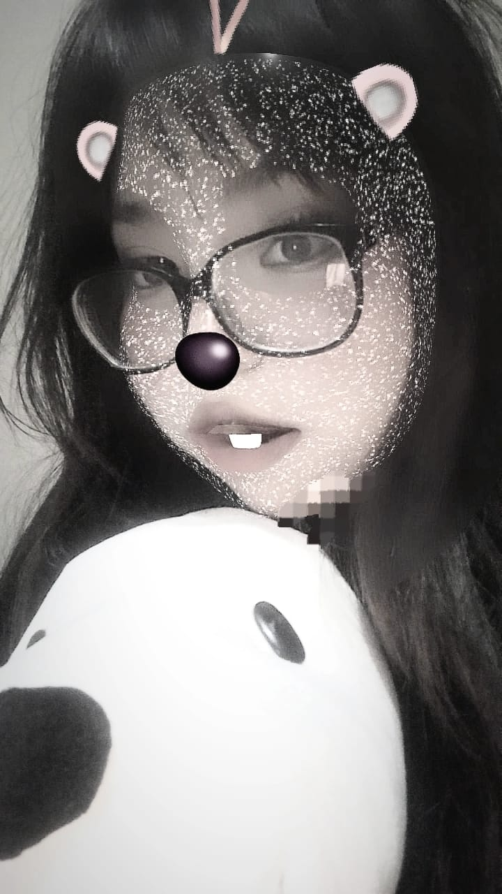

Espero que al leer estas palabras, sientas todo el cariño que tengo por ti. Desde el momento en que comenzamos a hablar por tik tok por primera vez senti una gran conexion contigo, supe que había encontrado a alguien especial. Cada partida de free y de roblox, cada risa y cada momento compartido han hecho que mi corazón se llene de alegría y emoción.
Quiero que sepas que mis sentimientos por ti han crecido mucho. Eres una persona maravillosa, con una luz que ilumina todo a tu alrededor. Tu linda voz es música para mis oídos. No puedo evitar sentirme enamorada de ti, de tu esencia, de la forma en que haces que todo sea más divertido y especial.
He estado pensando en nuestro futuro y en cómo me gustaría que fuera. Quiero construir una relación bonita y duradera contigo, donde podamos seguir compartiendo momentos increíbles y apoyándonos mutuamente en cada paso del camino. Me encantaría que fueras mi novia, y que juntos exploremos todo lo que la vida tiene para ofrecernos.
Cada día que pasa, mis sentimientos por ti se vuelven más profundos y claros. Es como si cada momento compartido, cada risa y cada conversación, construyera un puente directo a mi corazón. No puedo evitar sonreír cuando pienso en ti, y en todas las formas en que has hecho que mi vida sea más brillante y colorida.
Cuando estoy contigo, siento que puedo ser yo misma. Has creado un espacio seguro donde mi amor puede florecer, y me haces sentir apreciada y comprendida de una manera que nunca antes había experimentado.
No sé exactamente qué nos depara el futuro, pero tengo la esperanza y el deseo de que podamos enfrentarlo juntas. De que podamos crear recuerdos inolvidables y construir una vida llena de amor, respeto y comprensión.
te tengo un aprecio muy grande,te quiero demaciado y nunca olvides eso,espero algun dia poder llegar a llamarte "mi novia", mi linda chelita
